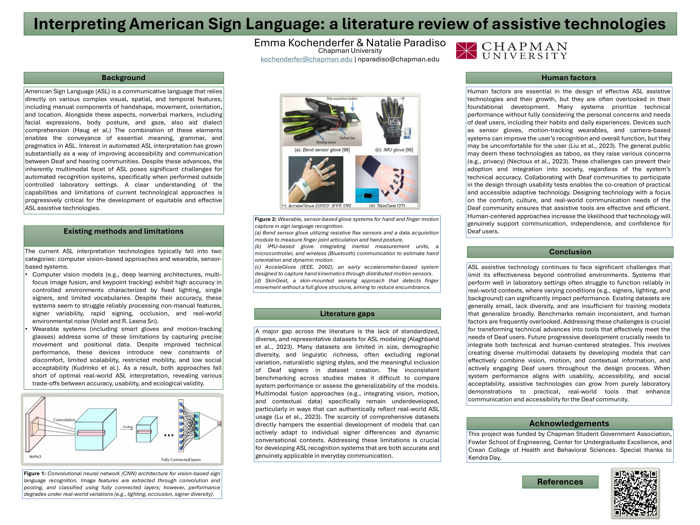

A literature review of assistive technologies for interpreting American Sign Language (ASL). With Natalie Paradiso, I surveyed how current systems attempt to recognize ASL and where they fall short by comparing computer-vision approaches against wearable, sensor-based systems, and examining the human factors that decide whether a technology actually gets adopted.
Co-presented at the Harvard National Collegiate Research Conference (NCRC). Funded by Chapman Student Government Association, the Fowler School of Engineering, the Center for Undergraduate Excellence, and the Crean College of Health & Behavioral Sciences.
